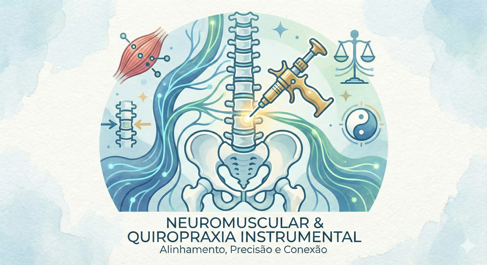
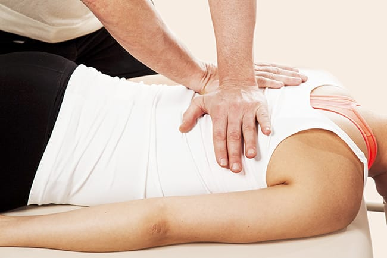
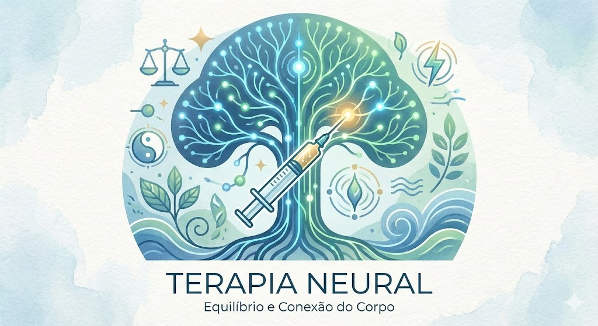
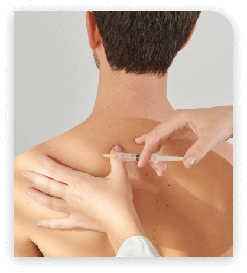

Fisioterapeuta | Especialista em Quiropraxia e Terapia Neural
Cuidado preciso e resultados eficazes para o seu bem-estar, focado em tratamentos para dor e reequilíbrio do sistema nervoso.
Agendar uma AvaliaçãoTerapia segura e com resultados rápidos focada no equilíbrio neuromuscular.
A Quiropraxia Instrumental aliada à terapia neuromuscular atua diretamente na origem da dor, promovendo um reequilíbrio completo do corpo sem a necessidade de estalos bruscos.


É uma técnica indicada para pacientes de todas as idades, focando na recuperação da mobilidade e no alívio imediato de tensões musculares e articulares.
Técnica de injeções em pontos específicos para reequilibrar o sistema nervoso.
A Terapia Neural baseia-se na ideia de que qualquer trauma, infecção ou cirurgia pode criar "campos de interferência" no corpo, prejudicando o funcionamento do sistema nervoso autônomo.


Através de pequenas aplicações em locais estratégicos, conseguimos "reiniciar" esse sistema, permitindo que o corpo volte a se curar naturalmente.
Entre em contato pelo WhatsApp para tirar dúvidas ou marcar um horário.
📱 Chamar no WhatsApp